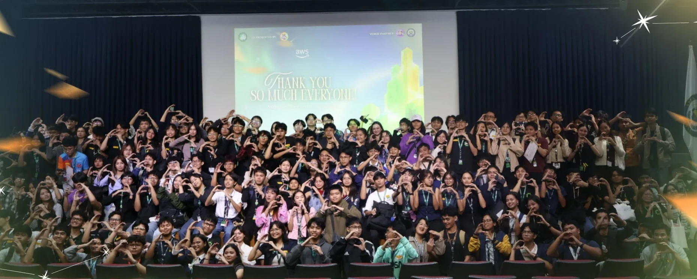
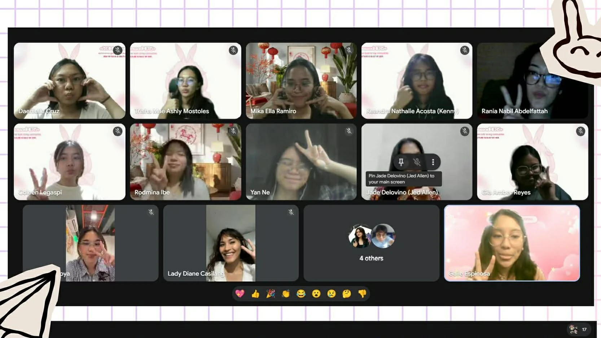

Lead & President · AWS Student Builder Group – APC
Rodmina Jhoy Ibe
IT Student | Aspiring Solutions Architect | Ambassador
About Me
Introduction
Hello! I'm Rodmina Jhoy Ibe, an enthusiastic IT student with a passion for solutions architecture and technology innovation. I thrive on learning new technologies and applying them to create meaningful solutions. As an ambassador for various tech communities, I enjoy sharing knowledge and fostering collaboration among tech enthusiasts.
My journey in tech is driven by curiosity and a commitment to continuous learning. I believe in the power of technology to transform lives and am dedicated to staying at the forefront of innovation.
Education
Information Technology
Currently pursuing my degree with focus on Cloud Computing, Web Development, and Software Engineering
Goal
To become a skilled solutions architect and contribute to innovative tech solutions that make a difference
Tech Stack
Frontend
Backend
DevOps & Cloud
Leadership & Activities
Ambassadorship
Impact
Through ambassadorship, I've helped numerous students discover their passion for technology and connected them with learning resources and career opportunities
Side Quests & Gigs
KKC Operations
Online Moderator Volunteer, Article Writer
Tutorials Dojo
Online Moderator, Events Volunteer, Article Writer
AWS BuildHERs+
AmbassadHERS+ – Marketing Department
OpenAI @ ADMU
Event Volunteer
AWS Student Community Day Mega Manila 2026
Officer – Tokens (Volunteer) & Partner Organizer
Lingua QA
QA Tester
Articles
AppBuildersPH Hackathon 2026: 24 Hours to Build, Ship, and Demo
A recap of a 24-hour AI hackathon in Makati, featuring on-device projects built to solve everyday problems, plus the winners and builders behind them.
Read articleCloud x AI at South Summit 2026: A Day of Building, Growing, and Leading
A recap of AWS Student Community Day South Summit 2026 in Laguna: the keynote, the talks, and a panel on tech careers and ethical engineering.
Read articleCertificates & Achievements
TESDA NC2 Certification
Technical Education and Skills Development Authority - National Certificate Level II
This certification validates my technical competency and skills in the ICT field, demonstrating proficiency in essential technical areas.
Continuous Learning
Actively pursuing additional certifications in cloud computing and web development
Hobbies & Interests
Tech Hobbies
Beyond Tech
Gallery
My first year at Asia Pacific College: events, workshops, and competitions with my campus orgs (APC Microsoft Community, JISSA, and JPCS) and ambassador programs.


My 2026 beyond campus: community days, hackathons, and tech events where I volunteered, organized, and took photos.


Let's work together
Get In Touch
I'm always open to discussing new opportunities, collaborations, or just having a chat about technology!
rodminaibe45@gmail.com